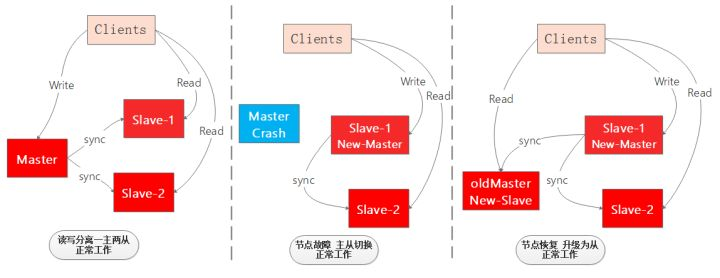
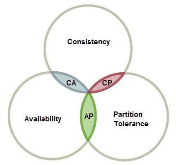
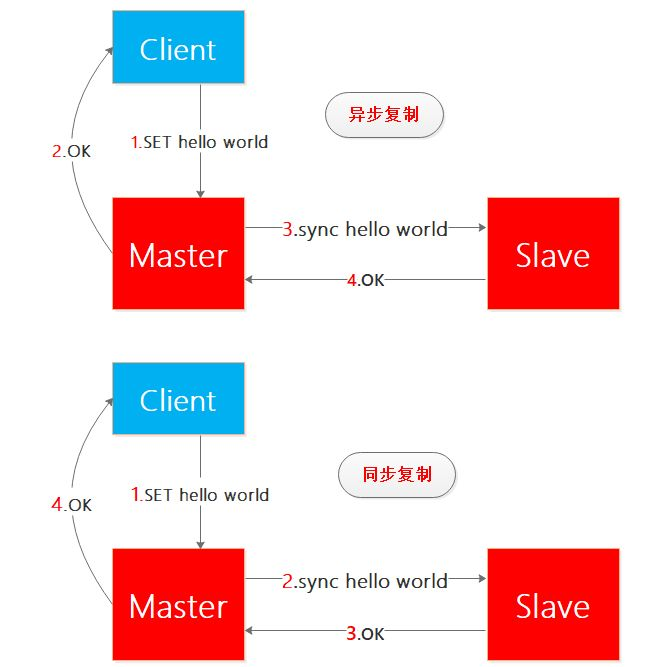
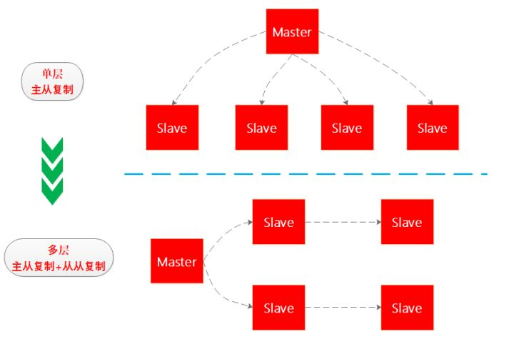
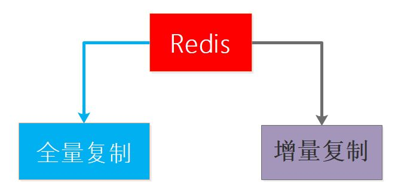
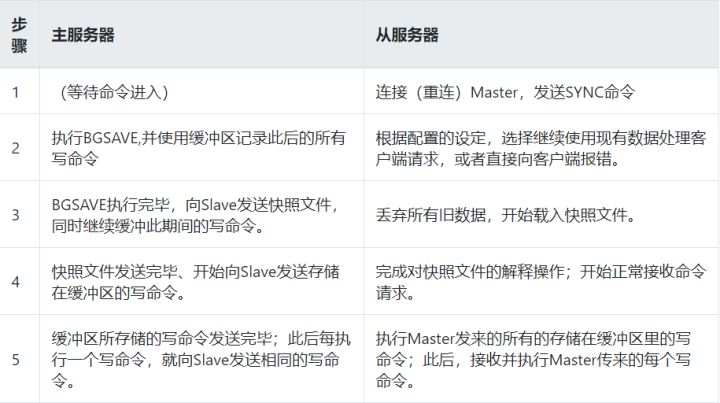
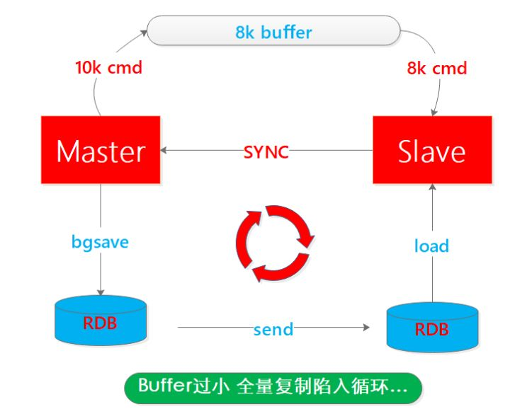
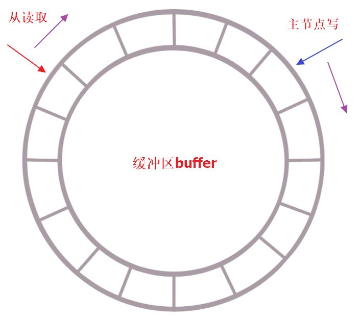
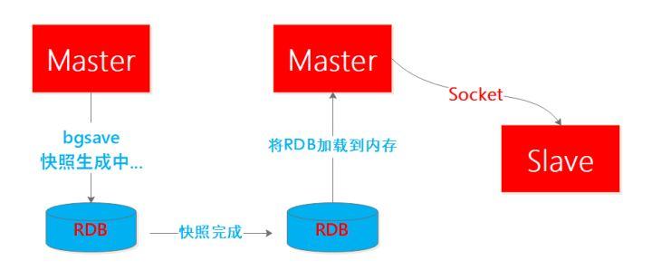

原文连接:https://www.cnblogs.com/backnullptr/p/12072501.html
温馨提示 更佳阅读体验：【决战西二旗】|Redis面试热点之工程架构篇[2]
前言
前面用了3篇文章介绍了一些底层实现和工程架构相关的问题，鉴于Redis的热点问题还是比较多的，因此今天继续来看工程架构相关的问题，感兴趣的可以先回顾一下之前的3篇文章，如下：
【决战西二旗】|Redis面试热点之底层实现篇
【决战西二旗】|Redis面试热点之底层实现篇(续)
【决战西二旗】|Redis面试热点之工程架构篇
通过本文你将了解到以下内容：
- Redis的数据同步机制
持久化和数据同步的关系、Redis分布式存储的CAP选择、Redis数据同步复制和异步复制、全量复制和增量复制的原理、无盘复制等。
Q:谈谈你对Redis数据同步(复制)的理解吧！
持久化和数据同步的关系
理解持久化和数据同步的关系，需要从单点故障和高可用两个角度来分析：
单点宕机故障
假如我们现在只有一台作为缓存的Redis机器，通过持久化将热点数据写到磁盘，某时刻该Redis单点机器发生故障宕机，此期间缓存失效，主存储服务将承受所有的请求压力倍增，监控程序将宕机Redis机器拉起。
重启之后，该机器可以Load磁盘RDB数据进行快速恢复，恢复的时间取决于数据量的多少，一般秒级到分钟级不等，恢复完成保证之前的热点数据还在，这样存储系统的CacheMiss就会降低，有效降低了缓存击穿的影响。
在单点Redis中持久化机制非常有用，只写文字容易让大家睡着，我画了张图：

高可用的Redis系统
作为一个高可用的缓存系统单点宕机是不允许的，因此就出现了主从架构，对主节点的数据进行多个备份，如果主节点挂点，可以立刻切换状态最好的从节点为主节点，对外提供写服务，并且其他从节点向新主节点同步数据，确保整个Redis缓存系统的高可用。
如图展示了一个一主两从读写分离的Redis系统主节点故障迁移的过程，整个过程并没有停止正常工作，大大提高了系统的高可用：

从上面的两点分析可以得出个小结论【划重点】：
持久化让单点故障不再可怕，数据同步为高可用插上翅膀。
我们理解了数据同步对Redis的重要作用，接下来继续看数据同步的实现原理和过程、重难点等细节问题吧！
Redis系统中的CAP理论
对分布式存储有了解的读者一定知道CAP理论，说来惭愧笔者在2018年3月份换工作的时候，去Face++旷视科技面后端开发岗位时就遇到了CAP理论，除了CAP理论问题之外其他问题都在射程内，所以最终还是拿了Offer。
但是印象很深T大毕业的面试官说前面的问题答得都不错，为啥CAP问题答得这么菜…其实我当时只知道CAP理论就像高富帅一样，不那么容易达到...细节不清楚...各位吃瓜读者，笔者前面说这个小事情的目的是想表达：CAP理论对于理解分布式存储非常重要，下回你们面试被问到CAP别怪我没提醒。
在理论计算机科学中，CAP定理又被称作布鲁尔定理Brewer's theorem，这个定理起源于加州大学伯克利分校的计算机科学家埃里克·布鲁尔在2000年的分布式计算原理研讨会PODC上提出的一个猜想。
在2002年麻省理工学院的赛斯·吉尔伯特和南希·林奇发表了布鲁尔猜想的证明，使之成为一个定理。它指出对于一个分布式计算系统来说，不可能同时满足以下三点：
- C Consistent 一致性 连贯性
- A Availability 可用性
- P Partition Tolerance 分区容忍性
来看一张阮一峰大佬画的图：

举个简单的例子，说明一下CP和AP的兼容性：
CP和AP问题
理解CP和AP的关键在于分区容忍性P，网络分区在分布式存储中再平常不过了，即使机器在一个机房，也不可能全都在一个机架或一台交换机。
这样在局域网就会出现网络抖动，笔者做过1年多DPI对于网络传输中最深刻的三个名词：丢包、乱序、重传。所以我们看来风平浪静的网络，在服务器来说可能是风大浪急，一不小心就不通了，所以当网络出现断开时，这时就出现了网络分区问题。
对于Redis数据同步而言，假设从结点和主结点在两个机架上，某时刻发生网络断开，如果此时Redis读写分离，那么从结点的数据必然无法与主继续同步数据。在这种情况下，如果继续在从结点读取数据就造成数据不一致问题，如果强制保证数据一致从结点就无法提供服务造成不可用问题，从而看出在P的影响下C和A无法兼顾。
其他几种情况就不深入了，从上面我们可以得出结论：当Redis多台机器分布在不同的网络中，如果出现网络故障，那么数据一致性和服务可用性无法兼顾，Redis系统对此必须做出选择，事实上Redis选择了可用性，或者说Redis选择了另外一种最终一致性。
最终一致性
Redis选择了最终一致性，也就是不保证主从数据在任何时刻都是一致的，并且Redis主从同步默认是异步的，亲爱的盆友们不要晕！不要蒙圈！
我来一下解释同步复制和异步复制(注意：考虑读者的感受 我并没有写成同步同步和异步同步 哈哈)：

一图胜千言，看红色的数字就知道同步复制和异步复制的区别了：
- 异步复制：当客户端向主结点写了hello world，主节点写成功之后就向客户端回复OK，这样主节点和客户端的交互就完成了，之后主节点向从结点同步hello world，从结点完成之后向主节点回复OK，整个过程客户端不需要等待从结点同步完成，因此整个过程是异步实现的。
- 同步复制：当客户端向主结点写了hello world，主节点向从结点同步hello world，从结点完成之后向主节点回复OK，之后主节点向客户端回复OK，整个过程客户端需要等待从结点同步完成，因此整个过程是同步实现的。
Redis选择异步复制可以避免客户端的等待，更符合现实要求，不过这个复制方式可以修改，根据自己需求而定吧。
从从复制
假如Redis高可用系统中有一主四从，如果四个从同时向主节点进行数据同步，主节点的压力会比较大，考虑到Redis的最终一致性，因此Redis后续推出了从从复制，从而将单层复制结构演进为多层复制结构，笔者画了个图看下：

全量复制和增量复制
全量复制是从结点因为故障恢复或者新添加从结点时出现的初始化阶段的数据复制，这种复制是将主节点的数据全部同步到从结点来完成的，所以成本大但又不可避免。
增量复制是主从结点正常工作之后的每个时刻进行的数据复制方式，涓涓细流同步数据，这种同步方式又轻又快，优点确实不少，不过如果没有全量复制打下基础增量复制也没戏，所以二者不是矛盾存在而是相互依存的。

全量复制过程分析
Redis的全量复制过程主要分三个阶段：
- 快照阶段：从结点向主结点发起SYNC全量复制命令，主节点执行bgsave将内存中全部数据生成快照并发送给从结点，从结点释放旧内存载入并解析新快照，主节点同时将此阶段所产生的新的写命令存储到缓冲区。
- 缓冲阶段：主节点向从节点同步存储在缓冲区的操作命令，这部分命令主节点是bgsave之后到从结点载入快照这个时间段内的新增命令，需要记录要不然就出现数据丢失。
- 增量阶段：缓冲区同步完成之后，主节点正常向从结点同步增量操作命令，至此主从保持基本一致的步调。
借鉴参考1的一张图表，写的很好，我就不再重复画图了：

考虑一个多从并发全量复制问题：
如果此时有多个从结点同时向主结点发起全量同步请求会怎样？
Redis主结点是个聪明又诚实的家伙，比如现在有3个从结点A/B/C陆续向主节点发起SYNC全量同步请求。
- 主节点在对A进行bgsave的同时，B和C的SYNC命令到来了，那么主节点就一锅烩，把针对A的快照数据和缓冲区数据同时同步给ABC，这样提高了效率又保证了正确性。
- 主节点对A的快照已经完成并且现在正在进行缓冲区同步，那么只能等A完成之后，再对B和C进行和A一样的操作过程，来实现新节点的全量同步，所以主节点并没有偷懒而是重复了这个过程，虽然繁琐但是保证了正确性。
再考虑一个快照复制循环问题：
主节点执行bgsave是比较耗时且耗内存的操作，期间从结点也经历装载旧数据->释放内存->装载新数据的过程，内存先升后降再升的动态过程，从而知道无论主节点执行快照还是从结点装载数据都是需要时间和资源的。
抛开对性能的影响，试想如果主节点快照时间是1分钟，在期间有1w条新命令到来，这些新命令都将写到缓冲区，如果缓冲区比较小只有8k，那么在快照完成之后，主节点缓冲区也只有8k命令丢失了2k命令，那么此时从结点进行全量同步就缺失了数据，是一次错误的全量同步。
无奈之下，从结点会再次发起SYNC命令，从而陷入循环，因此缓冲区大小的设置很重要，二话不说再来一张图：

增量复制过程分析
增量复制过程稍微简单一些，但是非常有用，试想复杂的网络环境下，并不是每次断开都无法恢复，如果每次断开恢复后就要进行全量复制，那岂不是要把主节点搞死，所以增量复制算是对复杂网络环境下数据复制过程的一个优化，允许一段时间的落后，最终追上就行。
增量复制是个典型的生产者-消费者模型，使用定长环形数组(队列)来实现，如果buffer满了那么新数据将覆盖老数据，因此从结点在复制数据的同时向主节点反馈自己的偏移量，从而确保数据不缺失。
这个过程非常好理解，kakfa这种MQ也是这样的，所以在合理设置buffer大小的前提下，理论上从的消费能力是大于主的生产能力的，大部分只有在网络断开时间过长时会出现buffer被覆盖，从结点消费滞后的情况，此时只能进行全量复制了。

无盘复制
理解无盘复制之前先看下什么是有盘复制呢？
所谓盘是指磁盘，可能是机械磁盘或者SSD，但是无论哪一种相比内存都更慢，我们都知道IO操作在服务端的耗时是占大头的，因此对于全量复制这种高IO耗时的操作来说，尤其当服务并发比较大且还在进行其他操作时对Redis服务本身的影响是比较大大，之前的模式时这样的：

在Redis2.8.18版本之后，开发了无盘复制，也就是避免了生成的RDB文件落盘再加载再网络传输的过程，而是流式的遍历发送过程，主节点一边遍历内存数据，一边将数据序列化发送给从结点，从结点没有变化，仍然将数据依次存储到本地磁盘，完成传输之后进行内存加载，可见无盘复制是对IO更友好。
小结
时间原因只能写这么多了，和大家一起学习不是把桶填满而是把火点燃。
回顾一下：本文主要讲述了持久化和数据同步的关系、Redis分布式存储的CAP选择、Redis数据同步复制和异步复制、全量复制和增量复制的原理、无盘复制等，相信耐心的读者一定会有所收获的。
最后可以思考一个问题：
Redis的数据同步仍然会出现数据丢失的情况，比如主节点往缓冲区写了10k条操作命令，此时主挂掉了，从结点只消费了9k操作命令，那么切主之后从结点的数据就丢失了1k，即使旧主节点恢复也只能作为从节点向新主节点发起全量复制，那么我们该如何优化这种情况呢？
巨人的肩膀
- https://segmentfault.com/a/1190000012390817
- 钱文品-《Redis深度历险核心原理和应用实践》